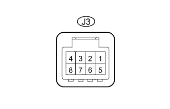
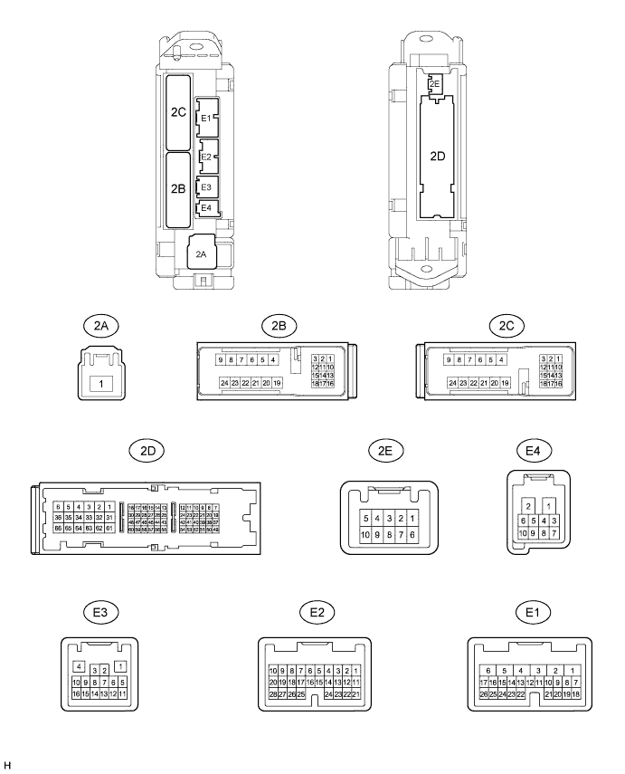

POWER WINDOW CONTROL SYSTEM > TERMINALS OF ECU |
| CHECK FRONT POWER WINDOW REGULATOR MOTOR ASSEMBLY LH |
Disconnect the I12 motor connector.
Measure the resistance and voltage according to the value(s) in the table below.
| Terminal No. (Symbol) | Wiring Color | Terminal Description | Condition | Specified Condition |
| I12-2 (B) - I12-1 (GND) | L - W-B | Battery power supply | Always | 11 to 14 V |
| I12-1 (GND) - Body ground | W-B - Body ground | Ground | Always | Below 1 Ω |
Reconnect the I12 motor connector.
Measure the voltage according to the value(s) in the table below.
| Terminal No. (Symbol) | Wiring Color | Terminal Description | Condition | Specified Condition |
| I12-10 (UP) - I12-1 (GND) | L - W-B | Power window up operation | Engine switch on (IG), multiplex network master switch off → up | 11 to 14 V → Below 1 V |
| I12-10 (UP) - I12-1 (GND) | L - W-B | Power window up operation | Engine switch on (IG), door glass fully open → power window auto up operation → door glass fully closed | 11 to 14 V → Below 1 V → 11 to 14 V |
| I12-7 (DOWN) - I12-1 (GND) | B - W-B | Power window down operation | Engine switch on (IG), multiplex network master switch off → down | 11 to 14 V → Below 1 V |
| I12-7 (DOWN) - I12-1 (GND) | B - W-B | Power window down operation | Engine switch on (IG), door glass fully closed → power window auto down operation → door glass fully open | 11 to 14 V → Below 1 V → 11 to 14 V |
| CHECK FRONT POWER WINDOW REGULATOR MOTOR RH |
Disconnect the I4 motor connector.
Measure the resistance and voltage according to the value(s) in the table below.
| Terminal No. (Symbol) | Wiring Color | Terminal Description | Condition | Specified Condition |
| I4-2 (B) - I4-1 (GND) | L - W-B | Battery power supply | Always | 11 to 14 V |
| I4-1 (GND) - Body ground | W-B - Body ground | Ground | Always | Below 1 Ω |
Reconnect the I4 motor connector.
Measure the voltage according to the value(s) in the table below.
| Terminal No. (Symbol) | Wiring Color | Terminal Description | Condition | Specified Condition |
| I4-10 (UP) - I4-1 (GND) | L - W-B | Power window up operation | Engine switch on (IG), power window regulator switch off → up | 11 to 14 V → Below 1 V |
| I4-10 (UP) - I4-1 (GND) | L - W-B | Power window up operation | Engine switch on (IG), door glass fully open → power window auto up operation → door glass fully closed | 11 to 14 V → Below 1 V → 11 to 14 V |
| I4-7 (DOWN) - I4-1 (GND) | B - W-B | Power window down operation | Engine switch on (IG), power window regulator switch off → down | 11 to 14 V → Below 1 V |
| I4-7 (DOWN) - I4-1 (GND) | B - W-B | Power window down operation | Engine switch on (IG), door glass fully closed → power window auto down operation → door glass fully open | 11 to 14 V → Below 1 V → 11 to 14 V |
| CHECK REAR POWER WINDOW REGULATOR MOTOR LH |
Disconnect the J11 motor connector.
Measure the resistance and voltage according to the value(s) in the table below.
| Terminal No. (Symbol) | Wiring Color | Terminal Description | Condition | Specified Condition |
| J11-2 (B) - J11-1 (GND) | L - W-B | Battery power supply | Always | 11 to 14 V |
| J11-1 (GND) - Body ground | W-B - Body ground | Ground | Always | Below 1 Ω |
Reconnect the J11 motor connector.
Measure the voltage according to the value(s) in the table below.
| Terminal No. (Symbol) | Wiring Color | Terminal Description | Condition | Specified Condition |
| J11-10 (UP) - J11-1 (GND) | L - W-B | Power window up operation | Engine switch on (IG), power window regulator switch off → up | 11 to 14 V → Below 1 V |
| J11-10 (UP) - J11-1 (GND) | L - W-B | Power window up operation | Engine switch on (IG), door glass fully open → power window auto up operation → door glass fully closed | 11 to 14 V → Below 1 V → 11 to 14 V |
| J11-7 (DOWN) - J11-1 (GND) | Y - B | Power window down operation | Engine switch on (IG), power window regulator switch off → down | 11 to 14 V → Below 1 V |
| J11-7 (DOWN) - J11-1 (GND) | Y - B | Power window down operation | Engine switch on (IG), door glass fully closed → power window auto down operation → door glass fully open | 11 to 14 V → Below 1 V → 11 to 14 V |
| CHECK REAR POWER WINDOW REGULATOR MOTOR RH |
Disconnect the J4 motor connector.
Measure the resistance and voltage according to the value(s) in the table below.
| Terminal No. (Symbol) | Wiring Color | Terminal Description | Condition | Specified Condition |
| J4-2 (B) - J4-1 (GND) | L - W-B | Battery power supply | Always | 11 to 14 V |
| J4-1 (GND) - Body ground | W-B - Body ground | Ground | Always | Below 1 Ω |
Reconnect the J4 motor connector.
Measure the voltage according to the value(s) in the table below.
| Terminal No. (Symbol) | Wiring Color | Terminal Description | Condition | Specified Condition |
| J4-10 (UP) - J4-1 (GND) | L - W-B | Power window up operation | Engine switch on (IG), power window regulator switch off → up | 11 to 14 V → Below 1 V |
| J4-10 (UP) - J4-1 (GND) | L - W-B | Power window up operation | Engine switch on (IG), door glass fully open → power window auto up operation → door glass fully closed | 11 to 14 V → Below 1 V → 11 to 14 V |
| J4-7 (DOWN) - J4-1 (GND) | B - W-B | Power window down operation | Engine switch on (IG), power window regulator switch off → down | 11 to 14 V → Below 1 V |
| J4-7 (DOWN) - J4-1 (GND) | B - W-B | Power window down operation | Engine switch on (IG), door glass fully closed → power window auto down operation → door glass fully open | 11 to 14 V → Below 1 V → 11 to 14 V |
| CHECK MULTIPLEX NETWORK MASTER SWITCH |

Disconnect the I11*1 or I22*2 master switch connector.
Measure the resistance and voltage according to the value(s) in the table below.
| Terminal No. (Symbol) | Wiring Color | Terminal Description | Condition | Specified Condition |
| I11-11 (B) - I11-12 (GND) | L - W-B | Battery power supply | Always | 11 to 14 V |
| I11-12 (GND) - Body ground | W-B - Body ground | Ground | Always | Below 1 Ω |
| Terminal No. (Symbol) | Wiring Color | Terminal Description | Condition | Specified Condition |
| I22-11 (B) - I22-12 (GND) | L - W-B | Battery power supply | Always | 11 to 14 V |
| I22-12 (GND) - Body ground | W-B - Body ground | Ground | Always | Below 1 Ω |
Reconnect the I11*1 or I22*2 master switch connector.
Measure the voltage according to the value(s) in the table below.
| Terminal No. (Symbol) | Wiring Color | Terminal Description | Condition | Specified Condition |
| I11-20 (UP) - I11-12 (GND) | L - W-B | Power window up operation | Engine switch on (IG), multiplex network master switch off → up | 11 to 14 V → Below 1 V |
| I11-20 (UP) - I11-12 (GND) | L - W-B | Power window up operation | Engine switch on (IG), door glass fully open → power window auto up operation → door glass fully closed | 11 to 14 V → Below 1 V → 11 to 14 V |
| I11-15 (DOWN) - I11-12 (GND) | B - W-B | Power window down operation | Engine switch on (IG), multiplex network master switch off → down | 11 to 14 V → Below 1 V |
| I11-15 (DOWN) - I11-12 (GND) | B - W-B | Power window down operation | Engine switch ON (IG), door glass fully closed → power window auto down operation → door glass fully open | 11 to 14 V → Below 1 V → 11 to 14 V |
| Terminal No. (Symbol) | Wiring Color | Terminal Description | Condition | Specified Condition |
| I22-20 (UP) - I22-12 (GND) | L - W-B | Power window up operation | Engine switch on (IG), multiplex network master switch off → up | 11 to 14 V → Below 1 V |
| I22-20 (UP) - I22-12 (GND) | L - W-B | Power window up operation | Engine switch on (IG), door glass fully open → power window auto up operation → door glass fully closed | 11 to 14 V → Below 1 V → 11 to 14 V |
| I22-15 (DOWN) - I22-12 (GND) | B - W-B | Power window down operation | Engine switch on (IG), multiplex network master switch off → down | 11 to 14 V → Below 1 V |
| I22-15 (DOWN) - I22-12 (GND) | B - W-B | Power window down operation | Engine switch ON (IG), door glass fully closed → power window auto down operation → door glass fully open | 11 to 14 V → Below 1 V → 11 to 14 V |
| CHECK FRONT PASSENGER SIDE POWER WINDOW REGULATOR SWITCH |
Disconnect the I3*1 or I25*2 switch connector.
Measure the resistance according to the value(s) in the table below.
| Terminal No. (Symbol) | Wiring Color | Terminal Description | Condition | Specified Condition |
| I3-1 (GND) - Body ground | W-B - Body ground | Ground | Always | Below 1 Ω |
| Terminal No. (Symbol) | Wiring Color | Terminal Description | Condition | Specified Condition |
| I25-1 (GND) - Body ground | W-B - Body ground | Ground | Always | Below 1 Ω |
Reconnect the I3*1 or I25*2 switch connector.
Measure the voltage according to the value(s) in the table below.
| Terminal No. (Symbol) | Wiring Color | Terminal Description | Condition | Specified Condition |
| I3-6 (UP) - I3-1 (GND) | L - W-B | Power window up operation | Engine switch on (IG), power window regulator switch off → up | 11 to 14 V → Below 1 V |
| I3-7 (DOWN) - I3-1 (GND) | B - W-B | Power window down operation | Engine switch on (IG), power window regulator switch off → down | 11 to 14 V → Below 1 V |
| I3-8 (AUTO) - I3-1 (GND) | R - W-B | Power window up operation | Engine switch on (IG)and door glass fully open → power window auto up operation → door glass fully closed | 11 to 14 V → Below 1 V → 11 to 14 V |
| I3-8 (AUTO) - I3-1 (GND) | R - W-B | Power window down operation | Engine switch on (IG), door glass fully closed → power window auto down operation → door glass fully open | 11 to 14 V → Below 1 V → 11 to 14 V |
| Terminal No. (Symbol) | Wiring Color | Terminal Description | Condition | Specified Condition |
| I25-6 (UP) - I25-1 (GND) | L - W-B | Power window up operation | Engine switch on (IG), power window regulator switch off → up | 11 to 14 V → Below 1 V |
| I25-7 (DOWN) - I25-1 (GND) | B - W-B | Power window down operation | Engine switch on (IG), power window regulator switch off → down | 11 to 14 V → Below 1 V |
| I25-8 (AUTO) - I25-1 (GND) | R - W-B | Power window up operation | Engine switch on (IG)and door glass fully open → power window auto up operation → door glass fully closed | 11 to 14 V → Below 1 V → 11 to 14 V |
| I25-8 (AUTO) - I25-1 (GND) | R - W-B | Power window down operation | Engine switch on (IG), door glass fully closed → power window auto down operation → door glass fully open | 11 to 14 V → Below 1 V → 11 to 14 V |
| CHECK REAR POWER WINDOW REGULATOR SWITCH LH |
Disconnect the J10 switch connector.
Measure the resistance according to the value(s) in the table below.
| Terminal No. (Symbol) | Wiring Color | Terminal Description | Condition | Specified Condition |
| J10-1 (GND) - Body ground | W-B - Body ground | Ground | Always | Below 1 Ω |
Reconnect the J10 switch connector.
Measure the voltage according to the value(s) in the table below.
| Terminal No. (Symbol) | Wiring Color | Terminal Description | Condition | Specified Condition |
| J10-6 (UP) - J10-1 (GND) | L - W-B | Power window up operation | Engine switch on (IG), power window regulator switch off → up | 11 to 14 V → Below 1 V |
| J10-7 (DOWN) - J10-1 (GND) | B - W-B | Power window down operation | Engine switch on (IG), power window regulator switch off → down | 11 to 14 V → Below 1 V |
| J10-8 (AUTO) - J10-1 (GND) | R - W-B | Power window up operation | Engine switch on (IG), door glass fully open → power window auto up operation → door glass fully closed | 11 to 14 V → Below 1 V → 11 to 14 V |
| J10-8 (AUTO) - J10-1 (GND) | R - W-B | Power window down operation | Engine switch on (IG), door glass fully closed → power window auto down operation → door glass fully open | 11 to 14 V → Below 1 V → 11 to 14 V |
| CHECK REAR POWER WINDOW REGULATOR SWITCH RH |

Disconnect the J3 switch connector.
Measure the resistance according to the value(s) in the table below.
| Terminal No. (Symbol) | Wiring Color | Terminal Description | Condition | Specified Condition |
| J3-1 (GND) - Body ground | W-B - Body ground | Ground | Always | Below 1 Ω |
Reconnect the J3 switch connector.
Measure the voltage according to the value(s) in the table below.
| Terminal No. (Symbol) | Wiring Color | Terminal Description | Condition | Specified Condition |
| J3-6 (UP) - J3-1 (GND) | L - W-B | Power window up operation | Engine switch on (IG), power window regulator switch off → up | 11 to 14 V → Below 1 V |
| J3-7 (DOWN) - J3-1 (GND) | B - W-B | Power window down operation | Engine switch on (IG), power window regulator switch off → down | 11 to 14 V → Below 1 V |
| J3-8 (AUTO) - J3-1 (GND) | R - W-B | Power window up operation | Engine switch on (IG), door glass fully open → power window auto up operation → door glass fully closed | 11 to 14 V → Below 1 V → 11 to 14 V |
| J3-8 (AUTO) - J3-1 (GND) | R - W-B | Power window down operation | Engine switch on (IG), door glass fully closed → power window auto down operation → door glass fully open | 11 to 14 V → Below 1 V → 11 to 14 V |
| CHECK MAIN BODY ECU (COWL SIDE JUNCTION BLOCK LH) |

Disconnect the 2A, 2C, E1, E2 and E3 ECU connectors.
Measure the resistance and voltage according to value(s) in the table below.
| Terminal No. (Symbol) | Wiring Color | Terminal Description | Condition | Specified Condition |
| E3-1 (GND3) - 2A-62 (GND2) | BR - W-B | Ground | Always | Below 1 Ω |
| 2D-62 (GND2) - Body ground | W-B - Body ground | Ground | Always | Below 1 Ω |
| 2A-1 (IG) - Body ground | B - Body ground | IG power supply | Always | 11 to 14 V |
| E2-1 (AM2) - Body ground | W - Body ground | Battery power supply | Always | 11 to 14 V |
| E1-6 (AM1) - Body ground | W - Body ground | Battery power supply | Always | 11 to 14 V |
| E1-24 (DCTY) - Body ground | L - Body ground | Driver side door courtesy light switch input | Driver side door open | Below 1 Ω |
| Driver side door closed | 10 kΩ or higher | |||
| E2-21 (PCTY) - Body ground | Y - Body ground | Front passenger side door courtesy light switch input | Front passenger side door open | Below 1 Ω |
| Front passenger side door closed | 10 kΩ or higher | |||
| E2-7 (RCTY) - Body ground | G - Body ground | Rear RH side door courtesy light switch input | Rear RH side door open | Below 1 Ω |
| Rear RH side door closed | 10 kΩ or higher | |||
| 2C-2 (LCTY) - Body ground | W - Body ground | Rear LH side door courtesy light switch input | Rear LH side door open | Below 1 Ω |
| Rear LH side door closed | 10 kΩ or higher |